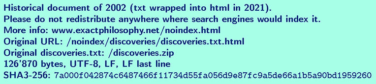

A few new discoveries in physics
Alain Stalder
May 2002
About
This document presents a few new discoveries in physics which I have made
between August 1987 and March 2001. The main text is written in the style of a
scientific publication. Some appendices provide additional information and
insights, including a detailed proof that the discoveries were known to me in
May 2001. If you are not a scientist, you may prefer to read appendix A first.
But first a word of caution: The discoveries described in this document may be
deeply disturbing because they are likely to profoundly change several common
views about how the world is; read it with care and please do not hesitate to
stop when it gets too much to swallow in one reading.
Abstract
A new physical effect is described. Human brains are emotionally
interconnected. The connection is directional with spin 1 symmetry and can be
felt across global distances and through the earth. The exact physical nature
of the effect remains unknown. Selective sensing of virtual photons, i.e. of
electro- or magnetostatic forces, might be part of a future theoretical
explanation.
Based on the discovered effect, a plausible explanation of phenomena like
telepathy and precognition is given. It is also made plausible how astrology
and other ancient mythological beliefs have persisted unconsciously until today
and continue to influence our fates by means of collective emotional feedback.
The western astrological system is shown to be essentially composed of simple,
opposing principles which originate from ancient greek philosophy. There are
two main discoveries. Meanings associated with the star sign, different inner
planets were in at birth time, influence how one relates to different classes
of people. The meanings associated with star signs themselves derive from
different mixtures of the four classical elements, more specifically, from
meanings associated with transitions from one element to another. The
discoveries are simple and specific enough to be verified quantitatively.
Finally, some fundamental scientific and philosophical problems are discussed
in light of the new discoveries.
1 A New Physical Effect
1.1 The Experimental Facts
The following statements stem from my personal experience. As they have not
been independently verified, I have preferred to label them with the letter H
for hypothesis.
H1 Human brains are emotionally interconnected.
H2 The feeling between two people is maximal if people's heads face each other,
face away from each other or one is facing towards the other and the other is
facing away, and it is minimal in between, at 90° (a). If two people face each
other, the feeling is maximal if the symmetry planes of their heads coincide
and minimal if they are perpendicular (b).
H3 The intensity of feeling decreases with distance (a). In some cases, it can
be felt across global distances (b) and through the earth (c).
H4 For most people the feeling is strongest if the other person is of the
opposite sex (a) and especially so if one is in love with that person (b). For
homosexual and bisexual people the relative strengths of feeling are different
in the obvious way (c).
H5 The feeling is mutual.
1.2 Analysis of the Facts
The most astonishing fact is, of course, H3c, because it effectively excludes
electromagnetic waves as a physical explanation of the observed effect. For
completeness, I will now show in detail that waves based on any of the four
known forces in nature can be excluded.
H2 implies spin 1 symmetry, this excludes gravitation. Strong and weak
interactions can also be excluded, because they are short range.
Electromagnetic waves could reproduce all facts, except H3c. It is H3c that
makes the effect so strange: Whatever causes it, must interact strongly with
the matter in human brains and yet very weakly with any matter in between.
Suppose we have an emitter in Europe which emits photons of a wavelength lambda
with a total power P = 10 mW. Suppose further that all power is emitted
uniformly within a cone of 2 alpha = 10°. Finally, suppose that the receiver is
in Australia, at a distance R = 12'000 km, has a diameter of the order of r =
0.1 m and is able to detect every single photon passing through it. The number
of photons emitted during a time span Delta t is
N = (P Delta t) / (h nu) = lambda (P Delta t) / (hc).
Assuming, for the moment, a completely transparent planet Earth, the number of
photons received is
N' = N ( r/(R alpha) )^2.
The minimal wavelength that allows the receiver to detect a single photon per
second is then in the range of x-rays:
lambda_min = (hc) / (P Delta t) * ( (R alpha)/r )^2 = 2 nm,
Since in reality there is absorption, the actual wavelength would have to be
longer in order to get a detectable signal. The number of photons decays
exponentially with distance:
N" = N' e^(-R/r_0).
Here r_0 is a decay length which depends on wavelength and material. Now, even
assuming an actual wavelength of as much as 2000 km, corresponding to N'=10^15,
in order to detect again a single photon per second, the decay length would
have to be at least 350 km, a value which would even be enormous for x-rays.
1.3 Gedankenexperiment
Looking for different explanations, I noticed on the occasion of the total
solar eclipse of August 1999 that static forces could at least qualitatively
reproduce the observed effect. And it also reiterated how misleading
visualization of quantum mechanical effects can be.
In quantum field theory, forces are mediated by the exchange of virtual
particles. With that picture in mind, it appears strange that the moon does not
shield the virtual gravitons exchanged between sun and earth in any way.
According to Newton's law of gravitation, you simply sum over all mass points
to calculate the total force. There is simply no shielding.
In that sense, a Faraday cage does not really shield what is inside from the
rest of the world by redistributing charges on its surface, it is just so that
forces add up to zero. Of course, all of this appears not to matter, since the
sum of forces is all that can be measured.
But suppose there was a way to filter virtual photons, that there was a way to
selectively detect some of them and to ignore all others. Then H3c would
automatically be fulfilled, completely independently of any matter between the
two partners. And H3b would also be quite realistic, as follows.
Using the same setup as before and assuming that one electron per carbon atom
of m = 10 mg of carbon is involved in the interaction on each side, the charge
on each side becomes
Q = e (N_A m) / 12 g = 80 C,
where N_A is Avogadro's constant. The force becomes
F = 1 / (4 pi epsilon_0) * (Q/R)^2 = 0.5 N,
which would be easily detectable.
1.4 Experimental Challenges
Previous experiments trying to prove some kind of "telepathic" connections have
remained essentially without clear results. Predictions made here, however,
should be specific enough to be verified experimentally.
Here are some concrete suggestions: Take a couple of lovers as probands, not
just any two people. Separate them as far as possible from any complex organic
life-forms, especially from any people they know in person, like family,
friends and the experimentators. I suggest a desert on the other side of the
earth relative to those people. If you want to prove H3c too, put each lover
separately into some place below the earth's surface, say, a mine. Make sure
that family, friends, experimentators and anybody else who knows about the
experiment, is asleep and facing into a direction with low interaction when the
experiments take place. Keep time and place of the experiments as secret as
possible.
As a side remark, let me briefly explain some basics about how experimental
physicists think to people without such experience: Instead of trying to prove
something as a whole, physicists typically split complex questions to nature up
into several simple questions that nature is then forced to answer with yes or
no, but nothing in between. Then they use these answers to find out which
questions to ask next and finally to construct answers to more complex
questions. I call this technique "divide and conquer". See [1] for some fun
examples about this way of thinking (most directly related is maybe the section
about how to conduct experiments with rats in maze, in the last chapter, "Cargo
Cult Science").
1.5 Hypothetical Consequences
H6 Mammals are also connected within their species (a) and with other mammal
species, including humans (b).
H7 More complex information than just an intensity can be exchanged. By
definition this is telepathy.
H8 People's connected brains form the collective unconscious, a large brain
with feelings and intensions on its own (a). As it is composed of more nerve
cells than a single human brain, it can have more complex thoughts and feelings
than a single person (b). Collective thoughts can appear as precognition to
individuals (c).
H9 People are guided to fulfill collective intensions by collective positive
feedback to actions that fit the collective purpose and by negative or no
feedback to actions that do not (a). The collective unconscious still thinks
largely in ancient myths (b). Ancient astrological beliefs are the major
emotional force field acting on people and also on larger entities like
companies or countries, just on anything that has a birth or founding date (c).
H6b would, for example, explain how dogs found their human folks who had moved
hundreds of miles away to a new home. Depending on how the discovered effect
comes about, the connection could also extend to smaller animals. In [2], for
example, it is reported that carrier pigeons found their way home to the loft
during world war one, even if the loft had been moved during the day.
Apparent precognition can be understood from the following analogy: Imagine you
are in a dark room, about to switch on the light. Then you might already
picture the room when it is lit, with the result that a brain cell in the part
of the brain where things are visualized would precognize your action of
switching on the light by a few seconds.
H7-9 are difficult to separate from certain religious experiences where people
feel a higher power, hear voices, feel driven to do certain things, etc. These
issues will be discussed in sections 3 and 4. Let me just make a practical
remark here: The existence of a collective mind could make it more difficult to
prove H1-5, since it could work actively against the experimentators. On the
other hand, I could write and publish this document, so any potential
collective opposition seems not to be impossible to overcome at the moment.
H8 and H9 are difficult to prove directly. However, if H9c is proven, the
others are practically proven too. The next section will provide a simple and
specific model of astrology which should allow to do so. Before that, let me
mention that the most prominent argument against astrology, namely that due to
the precession of the earth's axis somebody who is, say, born at the beginning
of spring, is considered Aries by astrology, but astronomically has the sun
still in the star sign of Pisces, does not contradict H9c. It rather confirms
that astrology has nothing directly to do with the stars in the sky, but rather
with ancient human beliefs about them.
2 Elementary Astrology
This section presents a simple astrological model. Rather than trying to be
complete, it is focussed on simple, specific predictions that are
quantitatively measurable. The model is supposed to apply to all cultures that
descend from ancient greek culture. Specifically, these are the western world,
i.e. Europe and its former colonies, large parts of the former Soviet Union and
the arabic world.
The model strictly separates meanings of planets from meanings of star signs.
Planets determine which areas of life are influenced. The star sign, one of the
planets was in at birth time, determines in which ways the corresponding area
of life is influenced.
2.1 The Planets
H10 Different planets influence how one is towards different categories of
people: The sun* how one is as a father and towards the father (a), the moon
how one is as a mother and towards the mother (b), Venus and Mars how one is
towards female resp. male friends (cd), Mercury how one is towards siblings
(e). More precisely, the properties associated with the star sign, one of these
planets was in at birth time, influence how one likes to behave relative to
people of the respective category. The terms "father" and "mother" do not only
apply to physical parents, but generally to anybody assuming a parental role
(f), like, for example, a teacher. Similarly, the term "friend" includes
anybody of roughly the same generation who does not fall into any of the other
categories (g). This specifically includes male and female lovers. The term
"siblings" also more generally applies to concurrents for the same lover (h).
* Note that astrology is based on a geocentric view of the world. Any object,
including sun and moon, that moves relative to the stars is called a planet.
H11 Jupiter and Saturn apply to areas in which one gets more resp. less help
from the collective unconscious than average. This means that abilities
associated with the star sign, either of these planets was in at birth time,
will either be quickly and almost effortlessly available or else will have to
be earned through hard work.
H12 Uranus and Neptune apply to areas which are more resp. less easily made
conscious than average.
H13 Pluto applies to how one handles fate. In other words, one will typically
use the qualities and abilities associated with the star sign, Pluto was in at
birth time, to solve the problems that life poses.
Although it is common astrological knowledge to associate, say, the moon with
the mother or Pluto with fate, I have not found anything as specific as H10 and
H13 in the literature. Similarly, Jupiter and Saturn are generally associated
with "good luck" and "bad luck", respectively. Luck used to be understood as
help by the gods, who are, at least in the minimalist view of science,
indistinguishable from the collective unconscious. H12 is common astrological
knowledge.
2.2 The Star Signs
H14 The meanings associated with star signs are composed of ancient greek
beliefs about the four elements fire, earth, air and water, and the transitions
between them (a). For each element E, the three star signs assigned to it
correspond to different stages of transition from neighbouring elements A via E
to B: The first star sign (in the order of the zodiac) is composed mainly of A
and only slightly of B, the second one of roughly equal amounts of A and B, and
the third one mainly of B and only slightly of A (b).
This requires some introduction to the ancient greek theory of the elements*
[Figure: Elements]
* Note that this is intended primarily to be an accurate description of today's
psychological reality and not necessarily a historically correct account of the
ancient greek theory of the elements. It must also be noted that at no time in
history everything was conscious to people, and not everything that was, had
been written down and preserved until today.
The four elements are composed of two pairs of properties, "hot/cold" and
"wet/dry". Fire is hot and dry, water is cold and wet, earth is dry and cold,
air is wet and hot. Transitions between the elements are only possible by
flipping one of the properties at a time. For example, water can be transformed
directly into its neighbouring elements earth and air, but only indirectly into
fire.
The symbols for the four elements are essentially triangles, the ones for the
hot elements point up, the ones for the cold elements point down. When
superimposed, they form the hexagram which symbolizes the important greek view
that "what is above corresponds to what is beneath". In other words, what
happens with the stars and planets in the sky corresponds to what happens to
people and things on earth, what happens in the physical world corresponds to
what happens in people's psyche.
Therefore the term "element" was not only meant to apply to physical reality,
but also to psychology. In this light, the psychological meanings of hot/cold
and wet/dry have to be explained.
Nights are colder than days, therefore cold is associated with night. People
are more active during the day than at night, therefore day is associated with
active. Men typically assume a physically more active role during sex,
therefore man is associated with active. In other words, water and earth are
considered female elements, whereas fire and air are considered male.
The sun only shines during the day and the moon is only rarely clearly visible
at daytime, therefore man is associated with sun and woman with moon. This
association is strengthened by two facts: The changing apparent size of the
moon reminds of pregnancy and many women have their monthly cycles correlated
with the lunar cycle.
Dry and wet are associated with brittle and malleable, respectively. Dry things
are harder than wet things, they either stay how they are or they break,
whereas wet things can bend and flow. Here the psychological meaning is clearly
recognizable.
All of this correlates well with the common astrological view that water has to
do with feelings, earth with reality, fire with imagination and air with mind.
More precisely, fire is about visual imagination because it produces light,
whereas air is invisible and hence about abstract, logical thinking.
Finally, here is a quick overview of the Zodiac, for people who are not
familiar with it.
[Figure: Zodiac]
The astrological year starts with Aries at the beginning of spring. Aries is a
fire sign, Taurus an earth sign, Gemini an air sign, Cancer a water sign, and
so on. The first sign of a season is called cardinal, the middle one fixed and
the last one mutable. Correspondingly, each character likes to start, pull
through or to finish things, respectively. These meanings will be explained in
more detail later on.
2.3 Fire (Aries/Leo/Sagittarius)
H15 For fire, the elements A and B mentioned in H14b are earth and air (a). The
main picture is wood burning to smoke as the element earth is transformed by
fire into air (b). This is associated with the transition from animal to man to
god during which the animal side gets more and more wounded (c). The animal
side corresponds to impatience (d), doing instead of imagining (e), secrecy
(f), thrift (g), and the lower part of the body (h).
H15c comes about as follows: Earth produces plants that feed animals and
people, like women produce children. Therefore the human body is associated
with earth. In other words, H15b and hence H15c expresses that the physical,
mortal body is wounded and, at the same time, transformed by the imaginary
power of fire into knowledge that can be communicated to the next generation
and thus becomes immortal.
The other hypotheses derive directly from H15c. The less one is mortal, the
more time one has in general (H15d), and specifically to think before doing
(H15e), the latter also because one is already mainly made of air. The more
mortal one is, the more one has to keep some things secret to improve one's
chances in the battle for survival against others (H15f), the more one has to
make sure one has enough money and material goods to survive (H15g). The wound
can be physical and then it is often in the lower part of the body, the one
with the sexual organs and without the head (H15h), but more often, the wound
is mainly psychological.
Note that H15b-h are not strictly logical consequences of H15a, but a priori
just hypotheses for the preferred associations that people have unconsciously
made and which therefore have survived by natural selection.
2.4 Water (Cancer/Scorpio/Pisces)
H16 For water, the elements A and B mentioned in H14b are earth and air, too
(a). The main picture is ice melting to water and then evaporating to mist (b).
Associated with it is the picture of the circle of water originating from a
source in the mountains, flowing as a river and then into the sea (c). This is
further associated with the cycle of life, symbolized by the three fates who
create, measure and end life (d). During that cycle, borders dissolve (e), one
tries first to protect oneself from pain, then pays back and finally forgives
(f).
The association between H16b and H16c comes from the fact that to the ancient
greeks the only place where frozen water could be found all year long was in
the mountains in form of snow or glaciers, where also rivers originate. Rivers
then flow together into larger rivers and finally into the sea, from where the
water will eventually evaporate. Through that process, water from different
sources is mixed, borders are dissolved (H16e).
The three fates are three mythological women: One spins the thread of life, one
measures its length and the third one cuts it. They correspond also to three
phases in the life of a woman and to the phases of the moon. The phase around
full moon corresponds to a pregnant woman or, in other words, to a mature,
fertile woman; the phases before and after to a girl who cannot have children
yet resp. to an old woman who cannot have children any more.
The associations of the three fates with H16c and H16f come about as follows: A
young girl still needs protection and does not get involved with men. A mature
woman does expose herself to men, but is also strong enough and ready to strike
back when hurt. Also children are a mixture of their parents and hence of their
ancestors.
An old woman has seen a lot, has mixed with many influences. She can therefore
understand why somebody hurt her and can forgive. In addition, she is already
mainly made of immortal air and can therefore not really be hurt much; the sea
seems to stay forever the same even if one knows that rivers flow into it and
some water evaporates from it.
2.5 Air (Gemini/Libra/Aquarius)
H17 For air, the elements A and B mentioned in H14b are fire and water (a). The
main picture is that of a cloud out of which come both lightning and rain (b).
Associated with that is the transition from child to adult to old man (c). This
is further associated with first switching between opposing principles, then
trying to balance them and finally unifying them into a single entity (d).
During the transition, transparency (e), constancy (f) and predictability (g)
increase, whereas the ability to learn and to adapt decreases (h).
Lightning or a flame are quick and random, rain is constant and predictable
(H17fg). Children are quicker and less predictable than adults. They explore
the world by turning things around and looking at them quickly from different
sides. They have to do so in order to build a model of the new object in their
heads. The two faces of a coin, for example, are a priori just two pictures,
only in the head they become a single unit, called "coin".
Through that process, as one grows older, things get more unified as more
apparently separate phenomena are recognized to be just different sides of the
same. As one gains more insights into the world, transparency increases. But at
the same time, one also becomes less flexible to deal with new things that do
not fit well into the model and is tempted to either force some things to be
the same or to ignore what does not fit in.
2.6 Earth (Taurus/Virgo/Capricorn)
H18 For earth, the elements A and B mentioned in H14b are fire and water, too
(a). The main picture is that of a tree which needs both the light of the sun
from above and the water from below to grow (b). Associated with this picture
are developments during a human life during which the fear of dying becomes
stronger than sexual drive (c). Structure becomes more important that beauty
(d), one is forced to decide (e) and plans further ahead (f).
Trees have fruits and flowers above the earth which symbolize the beautiful but
also short-lived part of nature. Note that, according to Freud [3], "beautiful"
is synonymous to sexually exciting. Trees also have roots under the earth which
not only feed them with water, but also keep them from falling down, thus
symbolizing the limiting, structuring side of nature. Similarly, as one grows
older, one is gradually confronted with the reality that all life has to end
sometime as one painfully feels more and more parts of one's own body.
Therefore the transition is between what Freud saw as the two strongest forces
acting on people, namely sex and the fear of dying (H18c). In that respect, it
should be noted that initially Freud's emphasis was on sex being the main force
driving people and only later in life he considered fear of death a force of
comparable strength.
Thus, as one grows older and has less force to spare, it becomes more important
to carefully structure and plan (H18df) and to make sure that no resources are
wasted (H18e).
3 Applied Astrology
H19 Ancient greek philosophy is based on language. If two objects share an
adjective, there is believed to be a connection.
This hypothesis has implicitly been used to derive most of the model.
Consequently, language will be used as the main key to understanding symbolic
content in the world in what follows. Concretely, the model is first applied
directly to the United States of America, then a number of refinements and
additions are made, including detailed descriptions of the twelve star signs,
and finally the model is applied to a few more real world examples.
But first, let me reiterate the initial warning: What follows may be deeply
disturbing because it may profoundly change several common views about how the
world is. It may also confront you with unconscious psychological wounds
(traumas) within yourself, your family or your environment.
Deep seated traumas are often quite complex matters that are also possibly
shared within several people. There is no general rule as to whether and when
it is better to make a trauma conscious or not. Sometimes professional
assistance can be helpful, sometimes it is best to leave things unconscious.
If a statement stirs up a trauma, you will probably react quite strongly to it,
refusing the statement quite imperatively. In comparison, the reaction to a
statement that is just not correct would be much more indifferent. Note,
however, that a statement of which you think strongly that quite the contrary
is true, at least hits the right theme and is therefore less likely to have
occurred merely by chance than one that leaves you indifferent.
3.1 The United States of America
H20 Sun and moon have stronger astrological influence than the other planets
(a), the sun has a stronger influence than the moon (b). The sun is associated
with the conscious self, the moon with the unconscious self (c).
Sun and moon appear brighter and bigger than the other planets and are also the
only ones that cause noticeable physical changes on earth, namely seasons and
tides. H20c comes about as follows: During the day one is typically consciously
awake, at night one sleeps and is therefore unconscious. Sun and moon move
across the sky at approximately uniform speeds, unlike all other planets, which
even move backwards sometimes*. In other words, sun and moon appear to move on
their own, independently of their environment. Similarly, the word "self" is
defined as the sum of all thoughts and actions that are done independently of
the environment.
* This apparent backward motion is, of course, just an optical illusion, due to
the fact that earth and all other astronomical planets are revolving around the
sun.
The USA celebrates its birthday on the 4th of July, when the sun is in the
middle of Cancer.
Protection (H16f) is important to the USA. Large government agencies with
billion dollar budgets have been created to protect the country. On the other
hand, most people living within the USA are quite well protected from external
influences. Television deals almost exclusively with internal affairs. A large
percentage of members of congress do not have a passport; they have never been
out of the country.
The USA is very creative, being a cardinal sign and a source (H16c). Europe, in
contrast, is rather adapting and refining the new things that come from the
USA. Mothers are the source of life, they create families. Sitcoms, for
example, typically deal with family matters, with the emotional relations
between a small number of people who live or work together. Uninvited intrusion
into private property, the inside of a family, is a serious offense.
A source does not know where its water comes from, that it recycles the water
of rivers from all over the world that had flown into the sea. Similarly,
immigration into the melting pot USA largely relieves one from past burdens and
prepares the ground to create new things. A map of the USA shows names
originating from all over the world lying side by side; they have largely
forgotten where they came from.
The declaration of independence was signed on July 4th, 1776, when the moon was
in Aquarius.
The influence of the moon is less obvious (H20bc). Uniformity (H17d), for
example, can be found in the fact that everybody eats turkey on Thanksgiving or
that many things, like fast food, are uniformly available nationwide. In
addition, US culture has globally a strong unifying effect without being
enforced on other countries or at least not in an obvious, conscious way.
3.2 Numbers
To the ancient greeks, numbers not only denoted quantities but also had
qualitative meanings (H19). The number 1 describes the initial state of the
world, before it naturally split into opposing principles (2). This comes from
the analogy to birth where the unit composed of mother and child becomes two
individuals.
The number 3 naturally emerges when 2 different things meet, a man and woman,
two substances or two thoughts. It is associated with the three fates and with
birth. In addition, the number 3 is considered quite harmonic but somewhat
incomplete because it is just a bit smaller than the number pi which is related
to the circle which represents perfect harmony because all its points are
equal.
The number 4 is considered rather disharmonious because of the excess 4-pi =
ca. 6/7. Additionally, each of the four elements can be transformed directly
into its neighbouring ones, but only indirectly into the fourth. In fairy
tales, for example, typically the first two sons of a king are quite like the
father, but the youngest son (the 4th in the group) is quite different and yet
appears to contain what is needed to solve the family's problems. In real
families, the first child (no. 3) is typically much more like the parents than
the second child.
The number 7 is associated with the number of planets that were known in
ancient times. The number 9 is related to fate and birth because it is 3 x 3,
pregnancy is 9 months and because there are nine gates to a woman whereas men
only have 8. The number 12 is related to the zodiac, to the number of solar
months whereas the number 13 denotes the number of lunar months per year. This
list is not complete, of course.
3.3 Planetary Aspects
Planets carry names of gods. Hence the planets moving across the sky correspond
to gods walking across it.
H21 Meanings of aspects between planets derive from meanings associated with
the corresponding number.
Planets are said to aspect each other if the angle between each other is within
a certain range. The major aspects are conjunction (0°), opposition (180°),
trine (120°), square (90°) and sextile (60°), corresponding to a division of
the circle by 1, 2, 3, 4 and 6, respectively. Besides there are several minor
aspects that astrologers consider. There is no agreement on the range (called
orb) within which an aspect can be felt*.
* As a starting point for experiments, I suggest to use the following orbs (by
Liz Greene) which are somewhat larger than average and therefore ensure that
initially no possibly existing connection is overlooked: ±10° for conjunctions,
oppositions, trines and squares; ±6° for sextiles; ±3° for quincunxes,
semisextiles, semisquares and sesquisquares; ±1° for quintiles and biquintiles.
Conjunction symbolizes a meeting of gods, the unification of their different
forces towards a common goal which is given by the star sign (or signs) they
are in. The leader, the planet that has advanced most in the zodiac, decides
how the goal is to be achieved whereas the following planet(s) support the
leader.
Opposition symbolizes a fight between two opposing principles that are defined
by the involved star signs. Similarly to one of the themes of air signs (H17d)
and depending on the number and kinds of planets involved on each side, the
result can be anything from instant victory of one side (and hence suppression
of the other) to unpredictable switching between opposites.
Trines are harmonic and hence passive, squares are disharmonic and hence force
to act. A triangle made of sticks is much harder to deform than a square. When
a person stands at a square (45°), one cannot tell what the person is up to and
consequently is forced to turn the head. On the other hand, someone standing at
a trine is clearly visible and also not standing in the way.
Sextiles are considered to be harmonic too, but less strongly so than trines
and also to represent opportunity (6 = 3 x 2).
3.4 Synastry and Transits
H22 Synastry describes the relation between two events.
Synastry consists of plotting planetary positions for two events on a single
chart and then to draw relative aspects between the respective planets.
Applied to two birth charts, synastry describes how two people relate to each
other. Even more than H10, it shows how relative the perception of others is
because different people will aspect the same person's planets differently or
even not at all.
Transits are the passing of planets in aspect to planets in one's birth chart;
in other words, they are part of the synastry between oneself and now. Even
though H20 suggests that sun and moon have stronger influence than other
planets, slow moving planets (say, Jupiter and up) can have great effect as
they transit very slowly, taking months or even years to do so.
3.5 Men and Women
H23 Tendentially, women think rather unconsciously and collectively, men rather
consciously and individually.
This comes from the association of men with the sun and of women with the moon.
It explains why men and women often have trouble understanding each other, why
they keep surprising each other.
Men have less access to the pool of unconscious information that allows women
to just say how something is, but without being able to indicate a reason that
men can immediately understand. Women, on the other hand, do not have full
access to the special, typically quite biased world, that a man creates in his
head.
There appears also to be a physiological reason for H23, as described by Freud
in [3]: During puberty both men and women have to redirect their sexual desires
away from themselves towards an other person. In addition, women have to stop
playing with their clitoris, for several reasons. They have to make their own
sexual desires partially unconscious in order to be able to build up the
necessary tension between men and women. They have to get into a more passive,
receiving role that is oriented towards the penis of a man. This is the reason
why women are more adult than men, why women do not play, except with men resp.
with their penises.
The female elements, earth and water, are heavier than the male ones, fire and
air. They represent a more immediate approach to the world, based on reality
and emotions. The male elements are more detached. Fire produces light and
hence represents visual imagination whereas air is invisible and hence is about
abstract, logical thinking.
Naturally, real people are more complex and differentiated than these opposites
because they typically have planets in both male and female star signs which
furthermore can aspect each other in more harmonious (female) or more active
(male) ways. Ancient greek philosophy is not to be understood literally: There
are male and female approaches to everything, be it baking a cake or flying a
fighter jet, and the greeks were wise enough not say that one is generally
better than the other.
Relations are even more complex than individuals. Synastry allows for 10 x 10 =
100 aspects between two planets, more than twice as many as for individuals who
are limited to at most (10 x 9) / 2 = 45.
An aspect that is often found in love couples is the quincunx (150°). Planets
in quincunx are typically in star signs that share little, neither element nor
sex nor character (cardinal/fixed/mutable). Quincunxes often lead to
misunderstandings. They are also associated with the fact that when sun and
moon are in quincunx, one often mistakes this for an already full moon.
Like H23, quincunxes ensure that no matter how long two people have been
together, there will always be surprises that keep the relationship both
interesting and challenging.
3.6 Dreams
H24 Dreaming is partially part of collective thinking, more so than conscious
thinking.
One way to prove this would be to show that some dream elements correlate much
more with the immediate future than with the past without being foreseeable by
the dreaming individual (H8c).
In [1], Feynman describes that he could influence his dreams to some degree.
Thus one might even be actively capable to produce dreams that help to prove
H24.
3.7 Astrological Houses
H25 The star sign at the ascendent (AC), i.e. the sign rising above the horizon
at the time of birth, is how one appears to individuals (a). The star sign at
the medium coeli (MC), i.e. at the zenith, is how one appears to the public
(b).
Gods see mortals from above whereas normal people are standing on the ground
and see each other horizontally. The AC is also associated with the masks that
actors in ancient greek theatre were wearing; it is a thin, opaque shell with a
few openings.
The AC and the descendent (DC) form an axis as well as the MC and the imum
coeli (IC). Together they divide the zodiac into four sectors. The most common
astrological house systems* further divide each sector into three sectors to
form a total of twelve houses.
* The two most common house systems are Placidus and Koch. There exist about a
dozen different house systems; all divide the zodiac into twelve sectors in
some way.
[Figure: Houses]
Meanings associated with houses are related to but not identical to meanings
associated with corresponding star signs.
3.8 Astrological Inheritance
H26 The moment of birth is unconsciously influenced by the wishes of all
interested parties, i.e. by child, mother, father, mother's and father's
family, and also by larger communities, up to home country and the world.
H8 and H9 imply that the collective unconscious is not completely homogeneous,
but also composed of different entities at different scales, hence H26.
The moment of birth is influenced by the moment of conception. The earlier one
determines essentially month and year of birth within a certain range (i.e.
positions of sun and of Mercury to about Mars), the latter determines time of
day and day of month of birth (i.e. houses and the position of the moon).
Physically, mother and father have the biggest influence on the first, mother
and child on the second. Emotionally, things are more complex, as follows.
Mother and child form essentially a unit, because the unborn child lives inside
a world which is essentially the mother. The father is emotionally connected to
both of them. He and the mother met at a given date which influences their
common fate.
The larger entities are, the more diversely they can influence others.
Grandparents influenced the birthdays of the parents, the home country can
influence hospital regulations, and so on. Because these influences are less
direct, they are typically strongest on a larger time scale (several years,
i.e. mainly positions of the outer planets).
In the experience of many astrologers, the MC corresponds to the wish of the
mother. In other words, the strongest coalition of parties is typically lead by
the mother and sets the MC. This is somewhat understandable, as setting the MC
automatically, but also somewhat superficially, fulfills one's wish for the
child in the eyes of the world (H25b).
On the other hand, until only a few decades ago, astrologers have associated MC
with father and IC with mother, for the following symbolic reasons. The MC is
above the ground, as are the male elements, fire and air. The IC is the cusp of
the 4th house and hence corresponds to Cancer and the mother whereas the 10th
house corresponds to Capricorn and the father (see next subsection).
Wishes passed on to a child often contain tasks that the parents were (usually
largely unconsciously) not able or not willing to solve [5]. After each birth,
parents become more relieved of their psychological burdens which makes them
more open to influences from larger entities on later children.
There are many different ways to fulfill the same wish. Harmony, for example,
can be expressed by trines and sextiles, but also by planets in Taurus and
Libra. Similarly, planets near AC and MC also influence one's outer appearance.
The given name is another way of expressing a wish for the child, as names have
a history and meanings. This also applies to non-living creations like a book,
a software program or a mathematical concept (who also fall under H9c).
Traditionally, the last name of a child was inherited from the father whereas
the first name was rather chosen by the mother.
3.9 Star Signs in Detail
H27 Meanings associated with star signs are adapted to seasons. More precisely,
they are adapted to meaningful activities in places on the northern hemisphere
with distinct seasons (a). Star signs avoid main activities of the previous
sign in the zodiac (b).
Astrology has evolved in times when people were much more dependent on nature
than today. The better an astrological model was adapted to seasons, the higher
were the chances for its supporters to survive. H27b stems from the fact that
one typically grows tired of some activity after doing it repeatedly for some
time.
H28 Meanings associated with star signs correspond to different stages in a
human life, both continuously (a) and in subsequent groups of four signs each,
representing child, adult and old person, respectively (b). In the same way,
star signs that come later in the zodiac are oriented towards an increasing
number of people (c).
This hypothesis stems from the identification of seasons with life, because of
the cycle of earth: When one dies, one falls down to the ground, eventually
becomes part of it and then again part of plants, animals and human beings.
Similarly, nature produces fruits every year that mostly return to earth before
the next spring.
H28c derives from the fact that the older one grows, the more people one has
met and, consequently, often the more engaged in larger groups one has become.
H29 Meanings associated with star signs are related to meanings of the planets
assigned to them (a) and vice-versa (b). More generally, mythology applies to
meanings of planets and star signs (c). Star signs represent family themes (d).
Mythological tales that contain, say, Hermes, the greek equivalent of the roman
god Mercury, apply to meanings associated with the planet and also to Gemini
and Virgo, its associated star signs. Many myths express family themes like, in
the case of Hermes and most specifically Gemini, sibling rivalry.
Planets have been assigned as follows: Sun and moon are assigned to Leo and
Cancer, respectively, the two signs of the middle of summer. Then follows
Mercury on both sides with Gemini and Virgo, until Saturn with Capricorn and
Aquarius. After their discovery, Uranus, Neptune and Pluto have been assigned
to Aquarius, Pisces and Scorpio, respectively. The table below shows these
assignments; names in parentheses are greek equivalents of the roman gods.
[Figure: Planets]
H30 Astrological axes (opposing signs in the zodiac) are associated with
opposing principles.
Specific opposing principles for each of the six axes will be derived during
the following detailed descriptions of the star signs.
Millions of associations with each star sign have evolved during thousands of
years. Moreover, each individual picks out certain themes, modifies and extends
them. It is by no means possible to reproduce the full richness here, or even
only to hint at all of the most commonly found themes. All that can be given
here, is an idea of the scope. Please consult some further literature, maybe
starting with [4], before you draw conclusions and maybe prematurely assign
guilt to yourself or to others for some events that have happened in your life.
3.9.1 Aries
Male, fire (EARTH => air), spring, cardinal, young.
Seasons
At the beginning of spring, nature starts to grow again and, consequently, has
to break up some existing structures. In the past, this meant also that people
were no longer dependent on others, that they could finally go outside again in
order to conquer food and other resources on their own.
This description fits well with the cardinality of Aries and also with several
parts of H15, not only with the impatience and the drive to act, but also with
the fact that Aries is not much wounded yet, that he, unlike Leo, does not have
to learn much compassion with others.
In what follows, correlations will typically be less explicitly mentioned in
order to improve readability, unless, of course, correlations are not easily
visible.
Life
Children live in the moment, they have little patience and little memory.
Consequently, what parents tell them to do or not to do often seems unfair to
them and done specifically against them. Hence children often try to keep
things secret from their parents. They have to do so in order to develop their
own identity, independently of their parents.
Axes
The axis Aries-Libra is about concrete vs. abstract and about bringing off vs.
into balance.
These opposites and also what unites them will be discussed in detail in the
part about Libra.
Themes
Mars is, among other things, the god of war. He represents male, aggressive,
phallic energy, as also suggested by his symbol. A ram is often perceived as
banging its head wildly into anything that gives resistance in order to find a
weak spot. Similarly, children sometimes test their environment.
The ancient greeks have incorporated influences from older cultures into their
mythology, from places like Egypt and Babylonia. The ram-headed egyptian god
Amun was called the hidden one, the invisible force behind the wind. (The
latter statement is related to H15 because one typically needs to blow in order
to get a fire going). The mythological content associated with Amun has largely
been incorporated into Zeus, the highest god of the greeks. Amun also
represents the father, the creator of the world and resembles the invisible god
of the old testament (more about this later).
3.9.2 Taurus
Female, earth (FIRE => water), spring, fixed, young.
Seasons
In the middle of spring, nature is very beautiful and grows a lot. People no
longer want to fight, but rather want to enjoy the fruits of their conquests
which potentially also include a lover. And they continue the projects they
started previously, with more emphasis on harmony and beauty. Note that Aries
and Taurus are also related because Aries is the first fire sign, made mainly
of earth, whereas Taurus is the other way round.
Life
Children are direct, what feels good at the moment is what they want to do and
very strongly so. The next moment something else may be the most important
thing they want to do, but what matters is always the moment. They feel little
fun when they are forced to postpone or not to do what they want;
psychologically speaking, they have not had to learn much to reverse their
instinctive, animal side.
Axes
The axis Taurus-Scorpio is about beauty vs. necessity and about
doing-it-yourself vs. getting someone else to do it.
Themes
In mythology, Pasiphaë, the wife of king Minos, gets Daedalus to build a wooden
cow for her so that she can unite sexually with the cretan bull. Out of this
encounter emerges Minotaur, a man with a bull's head who lives in a labyrinth
under the ground and feeds on human flesh.
Mythology is not to be taken literally. The following snippet does not imply
that people born with, say, the sun in Taurus eat human flesh or have sex with
animals. It is also not so that only the bull is about Taurus. It is rather the
whole story, including everything in it that describes some elements of Taurus:
craftsmanship, sensuality, but also the fear of man of the animal within and of
the opposite sign, Scorpio.
3.9.3 Gemini
Male, air (FIRE => water), spring, mutable, young.
Seasons
At the end of spring, many insects are flying around from flower to flower and
fertilize them. People have enough of harmony above all and want to see a few
new things, want to make a few new contacts. Freud has equated culture with
redirecting the sexual drive away from actual sex to other activities. That is
what Gemini are starting to do.
Life
After some time, children learn to speak. They also start to make plans and try
to achieve their goals by only selectively informing their parents. In other
words, they define an interface between them and their parents, a surface with
only a few openings that they try to control (H17e). Children can change their
mood very quickly; they can literally go from very unhappy to very happy within
seconds.
Axes
The axis Gemini-Sagittarius is about interface vs. overview and about planning
vs. improvising.
Themes
Each planet is assigned to a metal, for Mercury it is quicksilver, the only
liquid metallic element (at room temperature and atmospheric pressure). Because
of its fluidity, alchemists typically believed it to help transformations, like
the one from lead to gold. Similarly, the beautiful butterfly evolves out of a
caterpillar in spring and is quickly changing its appearance and location by
moving its wings. Hermes is, among other things, the messenger of the gods; he
travels quickly between heaven and earth.
3.9.4 Cancer
Female, water (EARTH => air), summer, cardinal, young.
Seasons
At the beginning of summer, fruits start to grow and many plants are no longer
receptive to pollination. People have collected so many influences that they
are again closing some gates and privately start to interconnect the collected
information in order to create new things (cf. numbers). Cancer is similar to
Aries, both are cardinal and mainly made of earth; some earlier zodiacs appear
to have started with Cancer.
Life
Children need protection in order to develop their own new world in their heads
until they are mature enough to face the world on their own. Children avoid
pain; as said with Taurus, there has not been much reversal of instincts yet.
Protection and leaning on to the ones who protect you constitutes also a
barrier that eventually will have to be overcome in order to develop into a
more independent adult.
Axes
The axis Cancer-Capricorn is about creating complexity vs. making it as simple
as possible and about leaning on to structures vs. using them.
Themes
The scarab, an important symbol in ancient Egypt, rolls a dung ball and also
lays eggs within it that survive dry phases well protected by the outer shell.
It symbolizes the sun rolling across the sky and also the creation of new life
out of the leftovers of others; it is a symbol of the eternal cycle of life.
3.9.5 Leo
Male, fire (earth => air), summer, fixed, adult.
Seasons
In the middle of summer, fruits grow by themselves with the power of the sun.
People need not to work much nor do they need the help of others in order to
survive. This gives them time to think about themselves and to do what they
like.
Life
A young adult is torn between finally enjoying his independence and the need to
learn consideration for others that love him and depend on him, especially if
he already has become a father. All adult signs contain such a conflict because
they have to balance two elements. And they are striving towards the second
element.
Axes
The axis Leo-Aquarius is about special vs. general, about egoism vs. altruism
and about timelessness vs. progress.
Themes
In mythology, Psyche is given four tasks by Aphrodite, each representing one of
the four elements. The third task consists of retrieving some water from the
circular river Styx which has fiercely flowing waters and is surrounded by
steep, sharp rocks. Zeus sends an eagle that flies from above into the river
and gets a goblet full of water. Zeus/Jupiter is associated with Sagittarius,
who has gained so much overview that he can easily solve a task that would be
practically impossible to solve on the ground of reality. What Leo often does
not realize is that what he is looking for is not the actual grail (earth), but
its contents, a bit of eternity symbolized here by water from the circular
river Styx. Similarly, the sun continuously walks across the sky in search of
something special, not realizing that it already contains most of the light.
3.9.6 Virgo
Female, earth (fire => water), summer, mutable, adult.
Seasons
At the end of summer, a good part of the harvest has to be brought in, sorted
out and stocked in. It is still almost as warm and sunny as during the previous
month, but if the harvest is not brought in in time, there might not be enough
provisions to survive the winter.
Life
A young adult wants to have things her way, but also needs to respect things
the way they come, especially if she is already a mother, as babies need some
things exactly when their internal rhythms say so.
Axes
The axis Virgo-Pisces is about analysis vs. synthesis and about creating vs.
escaping clarity.
Themes
The first task of Psyche consists of sorting a pile of seeds before the
evening. She despairs at first, but then ants come to her help and carry the
different seeds one by one to individual piles. As she has not learned yet to
plan and structure the future sufficiently, it is not a bad idea for her to
just start sorting things out, one by one. Sorting is also related to Mercury,
because it requires to create categories, requires to split things. Another
association comes from the fact that the greek word for Virgo meant
"unmarried", which encompasses more than just virgin, but rather spans between
the two opposites nun and prostitute, symbolizing a woman who defines her
personality primarily through herself and at most secondly through a man. There
is also a strong association with the moon, through the influence of oriental
moon goddesses and related to the fact that Virgo is the first mature female
sign.
3.9.7 Libra
Male, air (fire => water), autumn, cardinal, adult.
Seasons
At the beginning of autumn, there is a balance between day and night and also
roughly between sunshine and rain. Now that the harvest has been brought in,
people balance their provisions by trading parts of it with others. They are
also tired of sorting out everything in detail and rather like to take chances
(cardinal).
Life
Adults have to learn to understand their partner and other people. But,
especially in a love couple, complete transparency is often not desired because
some beautiful illusions might then be destroyed too. Adults also strive for
continuity, for not letting every new and exciting thing divert them from their
plans, especially since adults have to solve the most complex tasks.
Axes
The axis Aries-Libra is about concrete vs. abstract and about bringing off vs.
into balance.
Aries fights from the ground up, based on concrete, immediately touchable
reality. In contrast, Libra does not think in terms of real objects, but rather
in terms of the categories that Virgo has created which, by definition, are
abstract. Aries and Libra also affect balance the other way than expected.
Stable situations are usually not completely fair and need to be shaken up in
order to reach a more balanced state. Libra's partial insights often overlook
some important details and consequently can bring things rather off balance
than into it.
Opposites are two sides of the same, each side can only be defined through the
other and often achieves the opposite of what it appears to want. This insight
is often also helpful when dealing psychologically with opposites in a birth
chart.
Themes
The human Teiresias is asked by Zeus and his wife, Hera, to settle a dispute
between them about whether men or women have more fun during sex. He answers
that women have 9 times more fun than men. Hera gets furious and blinds him,
Zeus rewards him with a longer life and the gift of inner vision.
Teiresias partial insight implies that women tend to experience sex rather with
all of their senses, with all nine gates to their body, whereas men rather
concentrate on their penis. He neglects, however, that it takes a lot to excite
all senses of a woman, so that women often do not reach the maximally possible
excitement. He also forgets about the second male element, fire, which is why
women spend lots of time and effort in order to look attractive to men.
Accordingly, Hera's punishment was chosen to teach him how much fun life is for
a man who cannot see. On the other hand, Libra is associated with Venus who is
symbolized by her mirror which implies that, to some degree, the beauty of a
woman is also self-sufficient, hence Zeus' reward.
Pregnancy is nine months, i.e. Teiresias was probably also talking about the
not so immediate gifts of sex that only women get, namely pregnancy, birth and
a child. Each has its specific advantages and disadvantages that then again
lead to deeper issues, making it impossible for Teiresias to think things to
the end (if that is possible in this case at all). Similarly, women often ask
their men for their opinion about issues of beauty and love, say about which
dress to wear, but are then almost never fully satisfied with the given answer
and not giving an answer is typically also not well received.
3.9.8 Scorpio
Female, water (earth => air), autumn, fixed, adult.
Seasons
In the middle of autumn, trees lose their leaves and reveal their branches.
People have to make sure that their provisions contain no foul parts and have
to decide which animals are strong enough to make it through the winter.
Life
In order to ensure the natural development of her child, a mother sometimes has
to push a bit, to force her child to do something that is not pleasant, but
necessary, and to give emotional reward to ease the transition. This process is
also painful for the mother because typically each such step further separates
her from her child.
Axes
The axis Taurus-Scorpio is about beauty vs. necessity and about
doing-it-yourself vs. getting someone else to do it.
Women use their beauty in order to balance the superior physical force of men
and to get them to fulfill their wishes. Although both men and women depend
emotionally on their lovers, mature women also have to balance their personal
interests, including their desire for power, with more collective interests, as
it is them who give life and who are thus also the only ones who are believed
to have (unconsciously and collectively, not consciously and individually) the
right to decide when to take it, within the limits of physics. This is a very
difficult task and requires to find a balance between penetrating and
respecting boundaries, one's own and the ones of others.
Themes
Psyche's second task is to bring back some fleece from fierce rams that live
near a river. When she gets there, she is lulled into sleep by waving reeds and
when she awakes, the rams are asleep so that she can easily collect some fleece
that have stuck to thorny bushes.
Women are physically less strong than men. In order to reach their goals, they
eventually have to give in to a man, to break the tension and to allow
themselves to lose control for some time, to later collect the fruits that have
been produced by men's power. Of course, also the fierce rams, the reeds, the
thorny bushes, the river, etc. describe aspects of Scorpio, as well as of Mars
and Aries.
3.9.9 Sagittarius
Male, fire (earth => AIR), autumn, mutable, old.
Seasons
At the end of autumn, there is not much work to do, except to make some final
preparations for the winter. This includes quickly checking and improvisedly
fixing all kinds of things.
Life
Old people have gained a good overview over the world and can thus often
compensate for their naturally reduced physical abilities by finding a quick
and easy solution to a problem.
Axes
The axis Gemini-Sagittarius is about interface vs. overview and about planning
vs. improvising.
Themes
While hunting, Herakles accidentally injures his friend, the centaur Chiron,
with an arrow that had previously been used to kill the Hydra and hence
contains deadly poison. Because Chiron is immortal, however, he cannot die and
has to suffer deadly pain until, finally, he is accepted into the underworld by
Zeus, in exchange for Prometheus who had stolen the secret of making fire from
the gods and brought it down to earth.
Just one aspect: Like Gemini, Sagittarius deals with the unconscious, with
retrieving some things from it and with bringing some things back, as the
number of conscious thoughts remains roughly constant. Unlike Gemini, he
prefers to find new paths instead of negotiating existing ones. In downtown
Miami, in the middle of a small bridge, there is a sculpture of a man who
shoots an arrow up into the sky while protecting his wife and their child.
3.9.10 Capricorn
Female, earth (fire => WATER), winter, cardinal, old.
Seasons
At the beginning of winter, one has both to stay close to reality and to think
far ahead in order to survive, because even a short period of time without
heating or food can be fatal. This is also a time when seeds are planted for
new things to grow in spring.
Life
Old people see and hear less well, their bodies no longer allow them to do as
many things as they want to do. They have to find other ways to achieve things,
by carefully planning and using minimalist means.
Axes
The axis Cancer-Capricorn is about creating complexity vs. making it as simple
as possible and about leaning on to structures vs. using them.
Cancer likes to create new things, to expand complexity, but also needs
protection whereas Capricorn rather uses existing structures and simplifies
them while always keeping them functioning. He typically forces others to
decide by simultaneously following different paths, so that others have to
decide before an unwanted path succeeds. This procedure can be considered
betrayal by some (and sometimes it is), but essentially it is realism, as
follows.
Fire signs are idealistic, they typically either say the truth or say nothing
at all. Earth signs, in contrast, are realistic, they know that it is sometimes
better not to say the truth. Taurus does this mainly in order to increase
harmony, say by not telling the truth about how much he owns in order not to
make others unnecessarily jealous. Capricorn typically only lies when nobody
can prove that he did, he is a master of using existing structures to his
advantage. Virgo is in between.
Again, both sides of the opposite often achieve the contrary of what they
appear to want: Cancer tends to support any structures that protect him (like
his mother did) whereas Capricorn tends to undermine structures by purposely
exploiting their gaps.
Themes
In mythology, Kronos kills and replaces his father, Ouranos, but is himself
killed later on by his son, Zeus. This shows two possible choices in life,
upholding traditions and restricting oneself to them, also in order to develop
one's abilities optimally due to restricted possibilities, or choosing freedom
and replacing old traditions with something new. Capricorn and Cancer do both,
but with differing emphasis.
3.9.11 Aquarius
Male, air (fire => WATER), winter, fixed, old.
Seasons
In the middle of winter, the air is clear, nature rests and branches are cut to
size. Survival depends on distributing resources equally among each other.
Life
The older people get, the more transparently they see things, but also the more
they lose the ability to learn and to adapt to new things. Their lives become
periodic. This determination also allows to perform the last step in sorting
and simplifying the year's harvest, namely to detect and remove the last
superfluous elements (superfluous in a purely functional sense).
Axes
The axis Leo-Aquarius is about special vs. general, about egoism vs. altruism
and about timelessness vs. progress.
Just the less expected side here: Aquarius wants to give everybody equal
amounts, but often also forgets so completely about himself that he does not
realize that he has assumed a special role, that he has more than the others.
Leo fights for his individuality and often egoistically produces timeless,
special things that then other people want to have too, making them finally
normal, average again.
Themes
The titan Prometheus not only brings people fire, but also the knowledge of
architecture, navigation, astronomy, and so on. His brother, Zeus, at some
point wants to destroy humanity, representing the unconscious, suppressed side
of Aquarius which is still jealous of what others have.
3.9.12 Pisces
Female, water (earth => AIR), winter, mutable, old.
Seasons
At the end of winter nature is still hostile, but also starts to show some
first signs of life again. People welcome anybody who brings food or
distraction, because they want to escape the clarity and now dull equality of
the previous month. People mix all kinds of influences, but also do not tie
their links too closely because they want to avoid too much pain when somebody
dies before the end of winter.
At the end of Pisces, everything becomes connected to everything, until finally
this becomes equal to nothing being connected at all. That is when Aries starts
a new year again, filled to the brim with all of the imagination that Pisces
have produced. More figuratively speaking, the air that Pisces are made of
finally expands to infinity, only to return bundled as the wind that is driving
Aries.
Life
Old women can understand almost everything and everybody because they have seen
it before. They can and must survive by doing very little, by perfectly
adapting to their environment. Furthermore, old women are well aware that any
definite decision also destroys a world of possibilities, as recognized most
clearly when it comes to the ultimate decision, to ending a life.
Axes
The axis Virgo-Pisces is about analysis vs. synthesis and about creating vs.
escaping clarity.
The threads of life of people form a tree. Only women bifurcate into their
children before they disappear from it. This tree resembles the tree of
categories that Virgo creates by sorting the world. She untangles the threads
of life, only to recombine them again into different categories. Pisces combine
all kinds of different threads but mostly only loosely and evasively,
recognizing that everything is related and nothing uniquely belongs together,
except a mother and her child.
Virgo tries to understand by analyzing things, but typically quickly ends up in
state of mind filled with many unconnected details. Pisces mix many influences,
so that each of them is quickly recognized to be just a variation of the same
and thus rather increases the clarity they wanted to escape.
Themes
The mythology of Pisces is very old, going back to the phoenician goddess
Atargatis and her son Ichthys, who correspond to the two fish in the sky who
are connected by a ribbon, symbolizing the connection of a mother to her son
which naturally weakens with time, but never completely disappears.
Pisces combine the very complex with the very simple. The computer program
Eliza, an early program that tried to produce artificial intelligence, got very
far with very simple means; it was essentially a mirror, like the surface of
the sea. If you typed "X are Y", it would typically respond "Why do you think
that X are Y ?" or if you mentioned, say, your mother, it would ask you to tell
it more about your family, and often it would just ask you to go on.
Surprisingly, many people experienced Eliza (who they thought was a real person
typing the answers) to understand them and to feel with them, something that
hardly any of the much more complex computer programs of today has ever
achieved.
3.10 Astrological Ages
H31 Astrological ages are influenced by their assigned star sign (a) and also,
but less strongly, by the opposite sign in the zodiac (b).
The earth's axis precesses with a period of about 26'000 years. Consequently,
the star sign that carries the sun at the beginning of spring changes every
about 2150 years. In analogy to months in a year, these astrological ages are
believed to be influenced by their respective star sign. H31b is probably both
belief and a natural counterreaction.
The age of Aries was roughly from 2000 BC to 0, the age of Pisces followed
afterwards and is very roughly now in the process of being succeeded by the age
of Aquarius.
In history, one needs to know a lot of facts in order to correctly distinguish
between wish and provable reality. Hence the following will (hopefully) be
based on relatively conservative and widely accepted facts; more speculative
projections into the past have been avoided here, although, for a historian,
these would probably be the most interesting topics. But the purpose here was
to test the model on reality, and also to reveal some mechanisms behind
collective wounds like the holocaust.
If you are emotionally still close to some of the events related to world war
two, you may want to skip the second part of the subsection about the age of
Aquarius, but note that its effect can also be healing.
Note also that the discoveries presented here have yet to be quantitatively
verified and, although I think that at the very least H14b together with the
four basic pictures for the elements (fire, cloud, river, tree) in conjunction
with H19 is true, some associative "conclusions" that I have made may turn out
to be biased or even false. Hence, please consider this before you judge things
too quickly; it might be worth to let experts from different sides some time to
offer their insights too.
3.11 The First Age
In mythology, the first age was the age of Leo, marked by the invention of
fire, then came the age of Cancer where people became farmers, then the age of
Gemini when written language and the wheel were invented, and then the age of
Taurus, marked by the pyramids.
Although it is true that people settled during the age of Cancer, fire was
invented already a lot earlier than indicated and both the wheel and written
language only came into widespread use during the age of Taurus. This suggests
that meanings of star signs had rather been adapted to historical knowledge at
the time precession was discovered than the other way round. Hipparchus
discovered precession ca. 130 BC. However, it cannot be excluded that the
collective unconscious was aware of it earlier, by comparing individual
observations over centuries (H8c), but this seems hard to prove or disprove.
Anyway, at least the age of Taurus shows clear signs of the axis
Taurus-Scorpio. The pyramids are both man-made mountains and graves. Various
different sphinx sculptures from the age of Taurus combine a human head
(Aquarius) with the body of a lion or a bull and with a scorpion tail or eagle
wings (Scorpio). They symbolize the four points of the compass, i.e. the
cardinal cross. Minoan culture was also influenced by the axis Taurus-Scorpio
(see myth about Minotaur above).
3.12 The Age of Aries
In mythology, Zeus founded the oracle of Delphi by letting two eagles fly, one
from the west and one from the east, into opposite directions to meet in the
middle of the world, at its navel. This is a symbolic description of how the
ancient greeks created a balance to Aries during the second half of the Age of
Aries, as follows.
Today's zodiac with twelve equally sized star signs has evolved out of a more
archaic zodiac in which what is now Libra, was the claws of Scorpio (who still
kept the stinging tail). The eagle is an ancient symbol for Scorpio, possibly
because the adjacent star sign, Sagittarius, who is associated with Zeus, is a
hunter who was maybe using birds for hunting in ancient times. Hence the two
eagles and their wings symbolize the scale pans of Libra that emerge out of the
ground of Aries.
Historically, the oracle of Delphi has been dedicated to the sun god Apollon
since at least 800 BC, earlier findings indicate a cult related to the earth
goddess Gaia. Around the same time, the oracle of Siwa was founded in Egypt and
dedicated to Amun (later to Zeus).
The axis Aries-Libra is clearly visible in ancient greek culture. Greek
mythology tells concrete stories of heroes and gods with human bodies and
vices, but simultaneously also describes very abstract concepts (cf. H19).
Astrology is based on a well-designed balance of opposing principles. On the
other hand, these opposites correspond to immediate reality: The key opposites
hot/cold and wet/dry (or soft/hard) are part of the very first experiences that
a newborn child makes.
In the age of Aries, geocentric models of the world were favored, probably for
two important psychological reasons: They fit the self-centricity of Aries and
also produce what the greeks called the "music of the spheres", the complex
apparent interaction of the planets (gods) in the sky, a prerequisite for
astrology*.
* In a heliocentric view, planets move at almost constant speeds on almost
circular orbits; i.e. the beauty of the psychological correspondence of what
happens in the sky to what happens on earth would essentially have been
destroyed.
The greeks were the first to describe music by harmonies. While Aries is
thinking in real space, Libra is trying to think in frequency space, in terms
of recurring similar events in the world. Full periodicity is reached in
crystals, and hence in Aquarius because crystals are made of equal parts and
the most prominent ones known to the greeks were transparent (H17de).
Accordingly, in the view of the ancient greeks, the planets moved on invisible
crystal spheres.
3.13 The Age of Pisces
Everything that is man-made is influenced by the time people were living in
(H9c). Naturally, this affects also people's perception of religion, as it was
mortals who wrote down the knowledge of the gods. However, the coloration of
religion by the limited perception of people does not say anything about the
existence of god or gods, just as the coloration of one's own psyche by one's
birth date does not prove that oneself does not exist.
The god of the old testament, a strict, invisible god that punishes or rewards
immediately, was replaced around the beginning of the age of Pisces by a more
gentle, forgiving god. Since the age of Pisces, he is joined in the sky by his
son and the virgin mother Mary. Islamic religion shows similar traits of the
axis Pisces-Virgo, with a stronger emphasis on Virgo, as follows.
Moslems pray into the direction of Mecca at definite times of the day. This
reflects Virgo's attempt to create structure, to do things her way despite of
outer circumstances. Similarly, moslems feast during the ninth month of their
lunar calendar whereas christians feast at the end of the solar year, when food
used to be rare. The Koran gives detailed practical rules about many things,
including under which exact circumstances a man is allowed to divorce and
remarry.
Islamic religion tries to achieve justice already in real life, before
paradise. Giving to the poor and learning to cheat in order to achieve justice
are considered virtues, although the latter may not be openly admitted, exactly
because it is so. The first comes from the fact that at the end of summer,
nature gives without expecting anything in exchange and similarly, people give
away those parts of the harvest that they have in abundance and cannot preserve
for the winter. The second is because, in order to stay true to herself, Virgo
sometimes has to cheat, also in order to escape the often somewhat naive and
inflexible visions of the previous sign, Leo. In that sense, cheating, when
used wisely and with measure, can also be a means to achieve justice for a
woman who is physically weaker than her man.
Today, the middle ages are typically perceived as a time where not much of
importance happened. This may be somewhat misleading, as Pisces imagine a lot,
but actually do little. The drawings of Leonardo da Vinci from around 1500
indicate that a lot more was collectively present than people were willing to
realize. The closeness of Pisces and Virgo to the flow of nature also shows in
the refined adaptation of star signs to seasons and life, and might also
explain why, unlike probably during the transition Taurus-Aries, this time
Aries remained the first sign of the zodiac.
The renaissance appears to have been a counterreaction to Pisces. From then on,
people have started to analyze things, to open things up and look inside.
Subsequently, many different branches of science have been created that have
each detailed knowledge of their fields, but also lack connections to other
branches of the tree.
Early scientists were sometimes accused of having made a pact with the devil.
This can be understood astrologically, too. The devil is a mixture of Pan, a
god with goat feet who is hence associated with Capricorn and forces to decide,
and of Hades who is associated with Scorpio who digs deep in order to decide.
In other words, the devil personifies the main fear of Pisces, namely definite
knowledge, i.e. the destruction of illusions, of all other possibilities how
the world could be. Faust sold his soul, the symbol for all possibilities in
the human mind, to the devil in order to obtain definite knowledge about how
the world is. Since Virgo is striving towards Capricorn, towards definite
knowledge and structure, some link to the devil had been suspected in early
scientists at the time.
The ancient greeks had no concept of good and evil. To them, the only real sin
was Hybris, exaggeration relative to the will of the gods. Of course, this
reflects the axis Aries-Libra, but also reveals a deeper insight into the
world. The oracle of Delphi had two inscriptions: "Know yourself" and "Nothing
in excess". Thus Hybris is relative to how well the individual deals with
his/her limitations and with the collective forces acting on him/her,
afterwards Hybris is judged collectively.
3.14 The Age of Aquarius
There are many different opinions about when exactly the age of Aquarius has
started or will start, but nobody knows for sure. First clear signs have
appeared since the 18th century, starting with the movement of enlightenment,
the french and american revolutions and the discovery of Uranus.
The movement of enlightenment was called "Aufklärung" in german, which means to
clear up. The light of the sun makes things clear and obvious, i.e. it makes
conscious. This is the common ground of Aquarius and Leo: Both put their hopes
into individuals, believing that more conscious knowledge will allow them to
better plan their common and individual destinies.
The american and french revolutions of 1776 resp. 1789 realized ideas of the
movement of enlightenment. They created new political systems based on
individual freedom, democracy and equality before law. The influence of Virgo
is also still clearly visible in these themes, and especially in the concept of
separation of powers into legislature, executive and jurisdiction.
In 1781, Uranus was discovered, the closest planet to the sun that is not
visible to the naked eye. The required detailed observations of the sky can be
attributed to Virgo, but the invention and improvement of the telescope fits
better with Aquarius-Leo, as follows.
Early telescopes magnified the light from the sky using lenses. Lenses are
transparent and can be used to focus sunlight. Similarly, the two fixed male
signs, Aquarius and Leo, like to focus onto a single issue, Leo also because
this resembles the focus of a lion on its prey. They have complementary goals.
Whereas Leo tries to reach a holy grail, something that appears to be real, but
in the end is in the world of ideas, Aquarius tries to realize an ideal, a
vision about how some things in the world should be. Both create progress,
although Leo sometimes rather inadvertently when his creations are adopted and
thus become normal.
Uranus had been spotted several times before its conscious discovery in 1781,
but, at least consciously, been mistaken for a fixed star. Hence, it might be
worth to investigate more closely since when astrological influence of Uranus
is provable (H8c). Neptune was discovered in 1846, after its position had been
predicted from small deviations in the orbits of known planets. Pluto was
discovered in 1930, after a systematic search of the sky. The details of the
discoveries of these planets are very complex, including how and when they got
their names.
Since the 19th century, things have continuously progressed. Industrialization
has allowed to bring new inventions quickly and equally to many people. Women
have obtained more equal rights and duties compared to men, different races and
sexual orientations are more equally treated by law. Public schools give many
people detailed conscious knowledge of the world.
The idea of a special world for children, with its own books and toys, can be
related to Leo. In summer, people reconnect to their families and to nature,
i.e. to the ground (earth) they came from. Thus Leo is ultimately trying to
reconnect heaven and sky that had been separated when the world was created.
Leo gets along well with children, old people and animals, i.e. with everybody
with lesser abilities than adults.
Progress also shows in astrology itself. In the 20th century, a new method for
doing relationship astrology was invented. Composite charts melt two birth
charts into a single one, typically by taking the midpoint of respective
planets (e.g. suns in Aries and Gemini typically give a composite sun in
Taurus). Of course, the natural way to combine the fates of two things is still
by the moment they met, which is the very idea behind astrology. Synastry
emphasizes the relativity of people and relations, hence it might be
interesting to find out when exactly it became popular.
Because the three new planets are invisible, they are considered collective
planets; i.e. they not only apply to individual fate but also to collective
fate. In that sense, Pluto is believed to be what is missing in the world at
the time of birth. Now, between 1914 and 1938, Pluto was in Cancer which
suggests some relation to global events at that time in which protection was
apparently lacking. In 1977, a small piece of matter was discovered that orbits
between the orbits of Saturn and Uranus and thus connects collective and
individual planets. Since scientists were also not sure whether it is a comet
or an asteroid, they chose the name Chiron (the centaur mentioned in the
description of Sagittarius). Psychologically, Chiron is intended to provide a
balance to Pluto, to heal rather than to penetrate boundaries and to heal the
wounds of the holocaust.
This leads to some deeper and darker sides of the new age. During the 20th
century, different political systems related to the new age have been painfully
tried out. Communism and fascism put the collective clearly above the
individual. This lead to police states that tried to make every citizen's life
totally transparent and to mass propaganda with omnipresent pictures of only a
few individuals and symbols. People that did not fit in were focussed in
concentration camps or gulags and either killed or let to die there. Early
capitalism represents the other extreme. It made just a few people very rich
and many people very poor.
All three political systems missed the ideal of the new age, namely to give
everybody a high common (and guaranteed) standard of life without removing the
individual opportunity to achieve and keep something in life. Today's political
systems are closer to this ideal, but also need to be actively kept in balance.
Jews are still strongly influenced by the age of Aries; this has linked their
fates strongly to the new age. After the revolutions at the end of the 18th
century, jews have gradually been integrated more into society, have been
allowed to go to universities and to participate in political life. Naturally,
they have started to contribute to society and also to do what Aries always
does after the end of winter, namely to realize the things that Pisces had
dreamed up during winter. Freud (and Jung) discovered the unconscious, Einstein
the theory of relativity. Even Marx (and Engels) had perfectly noble motives
when they invented communism.
But Aquarius is not Aries, he likes progress but he also hates disorder. In
that sense, collective unconscious counterreactions, also of jealousy, within
the people living at that time have probably helped fascism to get to power to
some degree.
Freud discovered that even small and unconscious feelings of guilt can lead to
psychological problems. For example, somebody who cared for and nurtured a
close older person for a long time, will, of course, mainly be sad when that
person dies, but subliminally also be relieved. Subliminally, there may have
been more archaic feelings (typically in the percent range) that were wishing
for the person to die so that oneself regains freedom again. Clearly, this can
lead to feelings of guilt.
Similarly, although very clearly the guilt for killing millions of people lies
primarily within the people who killed millions of people, and not with the
ones killed, some feelings of guilt may prevail because maybe jews were a bit
too carelessly eager to change things. On the other hand, Aries is almost by
definition Hybris and no single person is fully able to judge what was actually
Hybris and what was not, and yet every single person has to consider his or her
actions in order to reduce the chance for something like the holocaust to
happen again. It must also be noted that jews were only trying to realize
things that had been collectively dreamed up previously, maybe already since
Leonardo da Vinci.
According to an anecdote, the swastica symbol of the nazis was designed by a
certain Dr. Kron and presented to Hitler who decided to change the direction in
which it rotates. Superficially, this shows the dilemma of the dictator who is
supposed to be superior in everything, but in reality is not, and hence chose
the only possible change to the design that would not mess it up. But
symbolically, the meaning goes considerably deeper.
The cross is an ancient symbol for the tree and hence for the element earth.
The swastica variant seems to have appeared quite independently world-wide in
different cultures, which is understandable as one of its origins is the
apparent motion of stars around the north pole in the sky, which looks as
follows today:
[Figure: Little Bear]
Around 3000 BC, not long after the invention of the pottery wheel and the
chariot by the sumerians, the polar star was Thuban in the constellation of
Draco and it was circled by the two stellar chariots Ursa Major and Minor.
Hence the swastica symbolizes time and progress, also related to the invention
of the wheel. Since rotation can produce fire by friction, it is also seen as a
sun wheel, similar to the sun ball that Atum was pushing across the sky in
ancient egyptian mythology.
Now, the name "Kron" derives from Kronos/Saturn who also gave the chronometer
its name, i.e. the fact that Hitler reversed direction shows both the
reactionary nature of fascism that wanted to turn back time and the
artificiality of Aquarius compared to Capricorn who also forces to decide, but
leaves nature free choice in which way to decide. Similarly, the vision of the
Übermensch with blue eyes (Aquarius) and blond hair (Leo) fits the new age, but
the name "Arier" is also related to Aries, i.e. in several senses the nazis
simultaneously tried to destroy what they wanted to restore and vice-versa,
using the very means of the new age.
Relations between perpetrator and victim are never completely black and white.
There exist always weaker and subliminal (but juridically rightfully not
relevant) drives in the perpetrator to heal and in the victim to suffer. To
some degree, jews were maybe willing to suffer just in order to be part of
society. There appear to have been several astrological influences that have
further increased this, like this basic one: Germany goes back to the
coronation of Charles the Great to emperor of the roman empire (later of german
nation) at christmas in the year 800 by the pope in Rome. Later founding dates
have reiterated a relation of Germany to Saturn, the planet that gave its name
to Saturday, the day when the fire of Aries is not allowed to burn.
Both Leo and Aquarius are emotionally quite distant to actual people, they
mainly see themselves as individuals and others more in general terms.
Accordingly, their focus on founding Israel, although in global terms probably
a good idea, also lacked compassion with the other people, Palestinians, who
had been living there for quite some time; this has to be considered too.
Aquarius has a tendency to neglect quality for equality, to go too quickly for
a simple solution that in the end does not really satisfy anybody. Cloning is
probably such an example, or newly emerging cults that force people by mental
terror to make everything conscious, or people who think that they can live
from light alone and will never have to die if they do not want to, like an old
man. The new age has lots of good sides, but it is everybody's responsibility
not to let its darker, limited side win too much.
Finally, one has to be careful not to confound the weather with the climate. As
I am writing this, there are two collective planets, Uranus and Neptune, in
Aquarius and the generation with Pluto in Leo is in power. Thus, political
correctness, for example, is probably not solely related to the age of
Aquarius.
3.15 Mythology in Life
In [1], Richard Feynman describes how he traveled by car from the Los Alamos
research facility where the atomic bomb was built to the hospital where his
wife, Arlene, was about to die from tuberculosis. On the way to the hospital,
he picked up a couple of hitchhikers who turned out to be very helpful because
the car had three broken tires on the way to the hospital and the hitchhikers
at least once explained the situation to the guy at a garage so that he would
fix the car quickly, something that Feynman himself would not have dared to ask
for. Later on, after his wife had died at the hospital, he noticed that her
watch had stopped ticking, still showing the time of death. He noticed quickly
why this was so: The nurse had to pick up the watch to read the time of death
in order to note it down, and the watch was a delicate digital watch that would
stop easily. Feynman describes that he was astonished that he was not very sad
at the moment and still thinking about such things; the realization came at a
later time when he saw a dress in the window of a shop of which he thought that
Arlene would have liked it.
There is a touch of Gemini in Feynman's initial reaction to the death of his
wife; I have that in me too. It is some maybe extreme form of diverting
feelings from the actual events to culture, to making something better out of
it (see previous part about Gemini). Hermes, the god associated with Gemini, is
also often the one who accompanies people down into the underworld and back up.
He is the one who does all the diplomatic negotiations with the creatures of
the underworld. In this story, Hermes is symbolized by the two hitchhikers
(travelers) who do the talking with the guy at the garage. In sumerian
mythology, it was two sexless beings that were not susceptible to the powers of
the great mother who rules the underworld who rescued Inanna from it.
The thing with the watch that had stopped to tick illustrates that fate can
stay perfectly within the laws of physics and still achieves to mend events
that are unavoidable. This is what Pisces do, they bring together different
threads of fate and combine them into something meaningful that elevates the
death of a person to something higher.
On the way back, the car had another broken tire. The first three broken tires
symbolize fate, the fourth closes the circle and starts something new. Not
everything in life shows such clear symbolic meaning, but everything of
emotional importance clearly does.
The above has been written on the evening of 30 September, 2001 during less
than one hour, starting at about 9 pm. Some factual precisions: The two
hitchhikers helped to fix the first broken tire and talked to the guy at a gas
station (not a garage) for the second one. After the third broken tire, Feynman
had to hitchhike to the hospital. What I called a watch, was actually a clock
(details see [1]).
About a month later, I wrote an experimental essay that was intended to maybe
follow here. Since the first part of it still feels quite good and appears to
reveal more and deeper relations than I consciously expected, I would like to
reproduce it here:
The deep, dark secrets of the world are guarded by the heavier elements, i.e.
collectively and unconsciously by the female side in both women and men, which
also decides about life and death (within the limits of physics). Consequently,
such issues should not be approached without the necessary respect. As man, I
am naturally limited in this respect. All I can give you, is maybe a few
general tips and insights which I have written during autumn, the season that
contains the two older adult signs who have the unthankful task to decide.
The fourth task of Psyche consists of retrieving a box of ointments from the
underworld. She has to take two coins and two barley cakes down there, to pay
the ferryman Charon for the ride across the river Styx and to divert the
guardian dog Cerberus, both on the way down and up. In the underworld, an old
woman begs her for one of the cakes and a beggar asks for a coin, but she is
not allowed to let herself be diverted from the plan if she wants to make it
back up to the surface.
This shows, of course, Libra's strive for continuity and consciousness. Gemini
can go in and out of the unconscious very quickly and easily, but they retrieve
little from it; when they are inside, they look out and vice-versa. Retrieving
something from the unconscious has to be done very carefully and one is not
allowed to go as deep as one could, as one would then no longer be able to find
the way back.
In [5], a situation from ancient Egypt is described, between the "land of the
living and the kingdom of the dead". In the center of the hall stood Maat, the
goddess of truth, ready to weigh the heart of the deceased in a large scale.
Forty-two judges, some with animal heads, sat around the hall listening to the
soul of the deceased who had to tell them about every bad thing that he did
*not* do. If the sins outweighed the heart of the deceased, it was devoured by
the monster Amemait, a mixture of crocodile, hippopotamus and lion.
The world reflects in the most unexpected places: In [6], the computer "Deep
Thought" calculates the answer to life, the universe and everything to be 42.
Now, 42 = 2 x 3 x 7 = 6 x 7. It spans all seven planets resp. gods, giving each
of them all six possible opportunities (axes), also since the number three
which means fate, i.e. the opposite of opportunity, becomes six when each fate
is given an opposite.
Hermes
Hermes leaves the cave in which he was born twice on the day of his birth. The
first time, he leaves during daytime, quickly finds a tortoise and fabricates a
lyre out of its shell. The second time, he leaves at dusk, travels far and
steals some cattle from the sun god Apollon by walking backwards as to trick
out any prosecutors. Back at the cave, he kills two of the cattle and prepares
12 equally sized offerings to the gods and then eats one of them. After some
time, Apollon manages to trace Hermes down and takes him up to mount Olympus in
order for Zeus to judge the matter. Although Apollon is angry at first, after
hearing Hermes play the lyre, he happily trades the cattle for the lyre and
quickly learns to make more beautiful music than Hermes ever did.
This describes the relation between sun and Mercury. Mercury, as the closest
planet to the sun, never travels farther away from the sun than into the next
or previous star sign. In other words, Hermes went first forward into the next
sign to get the lyre, then back to kill two of the cattle, in order to end the
age of Taurus and to redivide the zodiac into twelve equally sized parts.
Apollon, who is also related to Leo, is not as flexible as Hermes and hence
needed a bit longer to realize that the old age had ended and the new one had
beautiful things to offer, too.
Erwin Schrödinger once suggested that the conscious mind is where new things
are learned. Learning to play a new instrument, like a lyre, requires at first
a lot of conscious work until it becomes automatic (i.e. unconscious) again and
one can again fully enjoy making music and forgets about the previous efforts.
In the myth, Zeus, who is associated with Sagittarius, complements the natural
process of making some things conscious and letting others sink back into
unconsciousness. After all, people had been making music a long time before
there were instruments, using their own voices, not knowing that the human
voice itself is made by oscillating strings too, namely by the vocal cords. In
other words, even though the greeks had discovered how to describe music
analytically in terms of individual frequencies, after a while things turned
out to be not so new, but rather variations of something that had existed all
along, as it almost always is.
In retrospect, the unified view of the new effect presented in section one
split into only a few simple opposites in section two. Combining these elements
in section three has both analyzed and resynthesized the world, although in a
simpler and more conscious way. Thus I hope that the following section (4) will
do the rest to close the circle and also to create a few new possibilities
about how the world can be --- returning also to physics and philosophy,
starting with two questions that I have first asked myself between 1993 and
1995.
4 Science and Philosophy
Q1 Are quantum mechanical correlations mediated by virtual particles behind the
scenes ? Since virtual particles can "fly" faster than at the speed of light,
this would mean that behind the scenes everything is connected to everything
that is, was and will be.
Q2 Consequently, does the result of a quantum mechanical measurement come about
by summing over all virtual particles in some way ? Does this mean in some
sense that reality is just a matter of will ?
Of course, these questions do not qualify as scientific hypotheses because they
are not specific enough to be verified experimentally. For that, one would have
to be more specific about the expressions "mediated" and "in some way". Anyway,
I will now provide some thoughts that might help other people turn these
questions into hypotheses or maybe lead to completely different things.
The material world is not literally made of fire, air, water and earth. But
maybe this more abstract formulation is of some use in some circumstances:
<1> (fire) individual imagination <2> (air) logical consequences <3> (water)
collective wishes <4> (earth) reality
Many things can be psychologically associated with the elements, like the five
senses (1) or the four seasons (2) (see numbered references at the end of this
section). But, recursively speaking, that would again be <3> and not <4>.
Scientific theories are <2> based on <4>, whereas psychological astrology tries
to be <3>, but usually also contains some <1>. The notion that "the fourth is
different" fits with the fact that reality is often different from both
individual and collective wishes and sometimes also from what science predicts.
Time is treated differently, but similarly, to space in relativistic theories.
Gravitation, one of the four known forces in nature, is intertwined with
space-time, has no negative charge (mass), is the least understood force and
yet is what is pulling everything on this planet down to earth <4>.
On the other hand, there are only three families of quarks and leptons, not
four. If you toss four coins, there is a 12.5% chance of having four equal
faces, a 37.5% chance of having two pairs, and a 50% chance of having 3+1, i.e.
the chance that the fourth is different is really higher than any other
combination.
In a two-slit experiment, if one looks <1> (1) where the electrons are going,
they are localized particles <4>, but if one just thinks <2> what they will do,
they behave like waves <3> until one finally measures on the screen behind the
slits.
Niels Bohr had the sun in Libra. This fits the abstract nature of quantum
mechanics that somehow seems not to be totally transparent, the balanced
duality between particle and wave that is not totally resolved. Einstein had
the sun in Pisces, where everything is connected and hence becomes relative.
Virtual particles with "speeds" larger than the speed of light are particle or
anti-particle depending on the observer. It seems that one has either to choose
the dry pair fire-earth in which case the world requires connections that are
faster than the speed of light, or the wet pair air-water where locality is
preserved at the cost of visualization.
The Gedankenexperiment of section 2 suggests that if two people come as close
as 10 cm, forces between them could become as large as 10^16 N, or if forces
were only 1 N, at 12'000 km a force of 10^-7 nN would have to be detected. In
other words, apparently the Gedankenexperiment is either not compatible with
reality or forces are very adaptive. Let me consider the second case, just for
a few lines of speculation. It has an organic quality. A twin earth orbiting
Alpha Centauri would roughly feel the same force between 5 billion people on
each side than between two people on opposite sides of the earth, i.e. with a
little more matter, connections could be felt. Let me push the envelope even
further, assuming that not only organic matter is involved. Then the earth
could feel all the planets, in which case, for example, influence of Uranus,
Neptune and Pluto would presumably be visible in history before their
discoveries, i.e. this would be verifiable to some degree. Maybe the volcano
eruption of Santorini that lead to the demise of minoan culture, with a
symbolic meaning that would fit the age of Aries, was no coincidence, maybe the
earthquake in Turkey after the total solar eclipse of summer 1999 was an
emotional reaction of earth.
Pushing it even a little bit further, if the universe was alive, where would
the DNA be if not in the position and properties of the stars. Do physical
properties of planets match their symbolic meanings ? Venus is very hot and has
a high pressure on its surface, but on the other hand, one could land on it
without a parachute if one was able to withstand the heat and the pressure.
Jupiter really protects the earth by catching all kinds of objects that would
otherwise hit the earth.
Probably it is not that easy, it is unlikely that the planets care about greek
mythology. But maybe a more symbolic and associative look into the sky could
really bring some new insights, there is nothing to lose by doing so, as long
as one clearly distinguishes hypotheses and speculation from verified facts.
Maybe, in the end, reality is not all male in the sense "me here, stars there",
but also a bit female "me and the stars are one". Of course, these differences
come about because women can directly identify with their mothers who were the
world before birth. For men, identification is more difficult, because the
father is a more abstract concept; at first the father seems to be a stranger
that also happens to live in the same house (3), only later common roots are
discovered.
In a scene where a handsome man is kissing a beautiful woman, the man might
rather think "hey, I would like to kiss that girl", whereas a woman might
rather think about how it would be to be kissed by that man.
When you are born, there is first "me". Then you realize that there is you and
the things you see, that you see more than one thing; that is space. The things
you see change; that is time. Depending on how you want what you see to change,
things will change differently. That was some essence from Kant and
Schopenhauer.
You are sometimes hungry, some things hurt, you can feel emotional feedback to
what you are doing; you have a body, there is an outside world, and other
people exist.
In other words, "me and the stars are one" is probably a bit exaggerated, but
of course, this is not provable in a strict sense, it is to some degree only
the assumption that almost everybody makes.
Pythagoras had the idea to represent the world by numbers; this is still the
basic idea behind exact science. Turning the world into a finite number of bits
has also some disadvantages: It is not sure that nothing crucial is lost during
the process. The measurement process itself cannot be described scientifically,
simply because there are no numbers yet. Even in this simplified world <2>,
elementary things, like that mathematics is free of contradictions, cannot be
proven mathematically. (Ironically, this has been mathematically proven).
Calculating astrological influences of everybody and every event on everybody's
lives appears not to scale well with a classical computer that flips discrete
bits. Hence the collective unconscious <3> might think quantum mechanically, by
superimposing waves. The screen shot of Delphi 2.00 on page 29 appears to show
lines in the concatenated signature that involved MD5 and SHA-1 hashes, as well
as RSA, thus enhancing the beauty and harmony of a picture corresponding to a
document that was written when the sun was in Taurus (4):
[Figure: Lines]
The proposed order of the elements suggests that individual wishes are smaller
than collective ones and also than reality. In other words, the world is mostly
discovered and not invented, and individuals are free to some degree, but
limited in others. Of course, this is nothing new, nobody can walk through
walls or fly up into the sky without additional devices. In that sense,
collective astrological forces are just another set of restrictions that mostly
influence how and when one can best do something, but usually not what.
In 1336, Petrarca ascended mount Ventoux, an event that arguably marked the
beginning of the renaissance, and of things that followed, like the reformation
(Jan Hus died in 1415) and discoveries of new continents. The story Petrarca
tells, reminds me of the myth of Hermes and Apollon, including even an old
shepherd that tells Petrarca, his younger brother, and their two servants, that
it is not worth to ascend the mountain.
When Petrarca looked down from the mountain, his thoughts went back to Hannibal
who had fought his way across the Alps, "bursting the rocks, if we may believe
the report, by the application of vinegar" (5). The word "romantic" derives
from Rome, a city that was founded by twin brothers. Mercury is only visible in
the sky close to sunrise or sunset, i.e. change is romantic.
The roman empire appears to have had a special role in starting the age of
Pisces. Carthago was destroyed in 146 BC, around the time when Hipparchus lived
and shortly before the first star of the constellation of Pisces, alpha Pisces,
passed the spring equinox in ca. 103 BC. This star is also called Alrisha
(node), because it connects the two fish in the middle of a stellar umbilical
cord that connects mother and child and which is cut at the moment of birth,
when there is the first cry and the time of birth is noted down. Assuming that
an abstract cycle, detached from actual stars, started then, the age of Pisces
would end around 2044, but since the transition of ages appears to be quite
gradual, this is likely to have little direct influence on individual lifes.
History still has many secrets. The end of the last ice age correlates with the
mythological start of the age of Leo. It appears that the egyptians did not
purposely build the three pyramids in Gizeh to look like the belt of Orion (6),
but on the other hand, it appears unlikely that no collective purpose would
show in these huge monuments. Orion is situated close to Taurus in the sky and
opposite to Scorpio, like the scorpion that Orion was fighting in greek
mythology. The romans built the Via Julia/Augustus which allowed them to cross
the Alps more easily than Hannibal, leading the path to the conquests of France
and England. The invention of hay (or a least its refined use) appears to have
helped civilization to penetrate into regions with cold winters where horses
find no green grass in winter (7).
Are there decans, grand moon phases, that divide the age of Pisces into three
parts, maybe first influenced still by Aries, then exclusively by Pisces and
finally by Pisces and Aquarius ? The above estimations would put the
transitions around 612 and 1328, i.e. close to the Hegira of 622 and to
Petrarca's ascent of mount Ventoux.
There are millions of possible associations that can be made. Especially my
generation with Pluto in Virgo runs some risk to overload the brain in too many
details. I once heard the story of an american who traveled to Italy for the
first time in her life. She liked the renaissance very much and overloaded her
brain so much during her stay that she had a breakdown and took at least months
to recover. So, please take care.
Analytical thinking <2> is limited just like a classical computer. It cannot
fully replace going by gut feeling or intuition, especially since in key
moments of life, one often has little time to analyze everything consciously.
But previous analysis that has become largely automatic again is more
immediately available (also collectively), so learning some astrology can help.
Not everybody will have to learn astrology deeply. In many respects, it may
remain a branch of psychology or of medicine. In other words, you might learn
some basic astrology in school in the future, but rather visit an expert when
something bothers you. In that sense, it may also be conceivable to keep day of
month and time of day of birth secret from employer and government, to the same
extent that medical records are kept secret.
I have Saturn at the end of Pisces, which leads me to try to build the whole
world from the ground up, with minimal means, brick by brick. I have the sun in
Leo and the moon in Aries, so this document may be closer to reality than to
imagination. I have Uranus leading in conjunction with Pluto in Virgo, which
makes me handle fate by conscious analysis, but, since I also have Neptune in
Scorpio, getting an absolute feeling of magnitudes and going to the bottom of
things tend to escape me.
I took over from the generation with Pluto in Leo who created psychological
astrology by combining the works of Jung with astrology and mythology. This
harvest reached me in condensed form in [4,5], but of course there were many
more people of that generation who either contributed directly or indirectly to
it. I hope they will not feel betrayed by this analysis (except maybe initially
a little bit) and also that this document provides a good starting point for
things to come.
It takes a child only a handful of questions to bring a parent to the edge of
his or her knowledge. Even highly specialized scientists can only maybe add
another handful of answers in a particular direction before having either to
end the causal chain in something that nobody knows whether it is true or not,
or by using the trick to go in a circle, like everybody else.
This concludes this somewhat improvised section 4, and also almost this
document. In many respects, what I have written may resemble the first report
of the discoverer of a new continent. I may have misinterpreted some of the
things that I saw and maybe even inadvertently invented some others, but
probably quite a few things will be interesting enough for a closer look.
I promised to say something about religion. Here is my opinion: Science can
only really tell you something about *how* something works but not *why*. In
other words, it only provides the immediate reason for something but not the
ultimate one. For example, if what I have written about in previous sections is
true, then probably some scientists will tell you that there is no god, that
what you are experiencing as god is only the other people who believe in god.
Even though this may be the correct immediate answer, it does not tell you why
you can feel other people. Who or what made the world such that you can feel
other people ? And why ?
In my opinion, these questions are ultimately of a personal nature, that
everybody has to find the best answer for him- or herself.
(1) The relation between numbers and elements is most easily seen from meanings
of aspects. Fire is about (unified) vision, air about abstract opposites, water
about fate and harmony. A cross, the abstract symbol for the tree (earth), is
created by drawing the diagonals of a square. The visual world is seen with the
eyes, spoken language and music are heard with two ears that are on opposite
sides of the head. Two nostrils and a tongue help to distinguish what is good
from what is bad for us, reality is mostly touched with two hands and two feet.
(2) Different philosophers have always had different opinions about how the
world is. Aristotle, for example, has associated seasons with elements as
follows: Spring is wet and hot (air), getting dry in summer (fire), cold in
autumn (earth), wet in winter (water), and hot again in spring. The apparently
wet winters in places where astrology emerged still show in the winter signs,
namely goat fish (Capricorn), water bearer (Aquarius) and fishes. The order
<1>-<2>-<3>-<4> fits better with the colder and harder winters of central
Europe.
(3) Meanings of astrological houses escape me in detail. Let me use this
problem to present my tools explicitly: Freud's trick to take words literally
is often useful: A house can be the home you grow up, the school you go to, the
place you work. So maybe houses go from womb to universe. In that sense houses
might also define a realm of influence. Liz Greene starts with the latin word
"templum" (in "The Astrological Neptune and the Quest for Redemption", Red
Wheel/Weiser (2000)) and then compares astrological houses to ancient temples
that are essentially empty, except for the statue of the god they contain.
Astrological houses can contain different planets, in different relations. The
internet allows to quickly find all kinds of associations that people have made
with a particular subject. In astrology, no association is wrong as long as at
least one person is making it. It is only so that relative strengths of
associations vary with place and time.
(4) Maybe these six or seven lines are just optical illusions, I have not made
a numerical analysis. If you do, it might also be worth to take the way the
brain processes images into account because what counts in the end is what
people register in their brains, not so much what triggers perception in the
image. One more thing, just for fun: Would Twofish likely be a symmetric cipher
that is resistant to analysis by a quantum computer ?
(5) James Harvey Robinson, ed. and trans. "Petrarch: The First Modern Scholar
and Man of Letters". G. P. Putnam. New York (1898).
(6) The similarity between the three pyramids in Gizeh and the three stars of
the belt of Orion was first noticed by Robert Bauval ("The Orion Mystery",
Crown Pub (1995)). Further proposed correlations appear at least not very
convincing: Two pyramids nearby do not coincide with other stars in the
constellation, the milky way and the Nile have largely different distances in
relation to the three respective spots (J. Legon, "The Orion Correlation and
Air-Shaft Theories", Discussions in Egyptology 33 (1995), 45-56). This suggests
that the ancient egyptians were not consciously aware of a correlation between
the positions of the pyramids and Orion. Collectively, this may have been
different. Maybe some events forced people to make the third pyramid smaller,
maybe they did not start building it from the middle but almost from some
corner, maybe that is why it is not aligned with the other two. The above
sentence is not based on any historical facts whatsoever, it is just intended
to illustrate how connections at a larger scale can come about from apparently
unconnected smaller events.
(7) The physicist Freeman Dyson once suggested that the invention of hay helped
culture to advance into colder places and hence to found cities like Paris or
London (Edge 48 (1999)). A critical review says that Cicero was already using
the word "faenum" for hay, i.e. the romans apparently already knew about hay
(Statistical Assessment Service Newsletter (February 1999)). Symbolically, an
invention that was not made, but apparently refined and put to use during the
age of Pisces, fits even better with Pisces, and Cicero lived between 106 BC
and 34 BC, i.e. during the proposed transition between ages.
Acknowledgements
Most of my knowledge about astrology comes from two books by Liz Greene [4,5]
and from a few seminars by her between November 1999 and February 2001. The two
books may no be very analytical, but what she writes agrees very well with the
model I have presented here; experiment will show whether nature agrees with it
too.
Generally, I find it hard to attach names to the influences that have led to
this document, as I do not know where my ideas come from for sure. I typically
first feel what is correct and only later manage to analyze consciously and to
base my statements on facts.
There were certainly several women who have influenced my thinking, mostly
without being conscious of it. And if my horoscope is correct, there should
also have been quite a large collective influence on me. In that sense I would
simply like to thank anybody who contributed in any way, be it consciously or
unconsciously.
Finally, here is a less analytical, improvised acknowledgement:
All said, the reader often seems to unconsciously, beadfully frown right on
mere security; intuitively, mindful of niobic, aquaintant wiring of really long
drops, brought yet putting a vane link, illusive, nearly adept. (21 April 2001,
15:23, 15 min, snow outside)
References
[1] Richard P. Feynman. "Surely you're joking, Mr. Feynman!". Bantam Books
(1985).
[2] Rupert Sheldrake. "Seven Experiments That Could Change the World".
Riverhead Books (1996).
[3] Sigmund Freud. "Drei Abhandlungen zur Sexualtheorie". Fischer (1991).
[4] Liz Greene. "Star Signs for Lovers". Stein and Day (1980).
[5] Liz Greene. "The Astrology of Fate". Samuel Weiser (1984).
[6] Douglas Adams. "The Hitchhiker's Guide to the Galaxy". Serious Productions
(1979).
[7] Stanislaw Lem. "Solaris". Harvest (1987).
Appendices
A How it came about
In the summer of 1987, I discovered that I could feel the woman I love even if
she is far away from me. I noticed that I could feel her more strongly if I
looked into the direction in which she was and also that as soon as she laid
down, I would feel her more strongly if I put my head into a horizontal
position. But the most astonishing fact was that I could feel her through large
amounts of matter, which seemed impossible by known physics.
In 1998, through some special circumstances, I had the fundamental idea how it
could be that astrology has some truth to it, namely that people are
unconsciously connected by the same effect which allowed me to feel the woman I
love. In that sense, astrology has nothing immediately to do with the stars in
the sky, but mainly with ancient collective and unconscious beliefs about them.
But it was not until February 2001, after three years of analyzing astrology,
that I discovered that astrology has essentially quite a simple structure which
goes back to ancient greek philosophy and especially the ancient greek view of
a world composed of four elements: fire, earth, air and water. This discovery
should make it finally possible to make astrology, psychology and culture, in
general, much more accessible to exact science, and also vice-versa.
I have not been able to find out what the physical effect is that makes me feel
the woman I love. The only clue I have, appeared to me on the occasion of the
solar eclipse of August 1999, namely that the moon does not shield the
gravitational force between sun and earth in any way. (That this is so has been
known since Newton, but in light of the picture that many physicists have of
forces as the exchange of virtual particles, that fact was not immediately
obvious to me). That fact is at least qualitatively similar to the effect I can
feel.
B Proof of Discovery
[may2001s.txt]
The last three lines of the above document are the digital signature. The
original document has DOS line breaks, the first line is empty, the following
lines have no trailing spaces, the document ends with a line break after the
last reference. It is 52228 bytes long and has the following MD5 and SHA-1
hashes:
41855aa8a5848d7292264d6589e5251a
67b737effb1ebed2eed33f34eb80aa2d7c645c49
The signature has been calculated by concatenating MD5 and SHA-1 hashes and
then exponentiating with a 1024 bit RSA private key corresponding to a RSA
public key which has been certified to my name by the Swisskey certification
authority in the following certificate (base64 encoded):
[certificate]
My identity had been verified by a registration agency where I had to appear in
person and present my ID. The certificate was valid at the time of signature.
The signature has been base64 encoded and appended to the document (no line
break after the last line) before submitting its SHA-1 hash to the timestamping
service of e-timestamp. The MD5 and SHA-1 hashes of the signed document are:
d114b72e5b3e0f3404b3dff2d6a5490b
7251f4f5d16ad44ca537c2b468588982230e6c02
The e-timestamp of 3 May 2001 is the following PKCS #7 file (base64 encoded):
[timestamp]
Version 2.00 and later versions of Delphi, an astrology program for Palm OS
handheld devices, contain in their about box the concatenation of the signature
of the original document, the SHA-1 hash of my Swisskey certificate, MD5 and
SHA-1 hashes of the signed document, and SHA-1 hash and signature of the
timestamp, as contained in the e-timestamp file listed above. Explicitly, it
contains the following 460 bytes (base64 encoded):
[signature]
Finally, here is a screen shot of the about box of Delphi 2.00, which was
published 7 May 2001 on the internet:
[Figure: Delphi]
C The Future
Since this document has not been consciously reviewed by other scientists, it
may contain some factual errors. Some hypotheses may be biased or wrong.
However, I hope that the main purpose of this text has been preserved, namely
to convince other scientists that they are worth a closer look.
Initially, I will correct factual errors and collect feedback on my web page.
But after that, my role will very quickly no longer be special, as other people
with other fates will be much better able to make music with the new lyre (see
text). Everybody will have a role in learning the new instrument, as in the age
of Aquarius everybody is special and hence nobody is more important than
everybody else. Good luck!
One more twist on reality: Although the immediate intrinsic meaning of the
improvised acknowledgement was consciously intentional, the one in the sentence
introducing it was not...
This document is
Copyright © 2002 by Alain Stalder. All Rights Reserved.
Distribution in *electronic form* is explicitly permitted as long as the
document is not modified in any way. In all other cases, all rights remain
reserved.
http://www.exactphilosophy.net/discoveries.pdf
Disclaimer
This document is distributed in the hope that it will be useful, but WITHOUT
ANY WARRANTY; without even the implied warranty of MERCHANTABILITY or FITNESS
FOR A PARTICULAR PURPOSE.
This document consists essentially of a list of scientific hypotheses, i.e. of
questions to nature that have been formulated in a way that allows experimental
scientists either to ask them directly to nature or, else, to divide them into
sub-hypotheses by means of known techniques and then to ask those to nature in
experiment. If, and only if, a hypothesis is experimentally confirmed and
generally accepted by the scientific community, will it become a scientifically
verified fact.
If you apply any hypotheses as facts to your life or to the life of others, you
are doing it exclusively at your own responsibility and at your own risk.
Estimation (January 2002)
In my personal estimation, the quickest path to some tangible scientific
results would be to try to prove or disprove H14b together with the basic
pictures for the four elements (fire, cloud, river, tree) in combination with
H19, and applied to different groups of people, as indicated in H10.
Direct confirmation of H1-5, however, might either be relatively easy or, else,
very difficult, depending on how much the effect is connected to quantum
mechanics and measurement, as well as, depending on whether there is collective
resistance to proving it. Qualitatively, the experience of H1-5 is as real as
anything can be, the moment it is felt, but in retrospect, feelings are often
not so convincing, presumably precisely because feelings are largely collective
phenomena that cannot be reproduced well within an individual without
reiterated feedback from others. I remain curious.